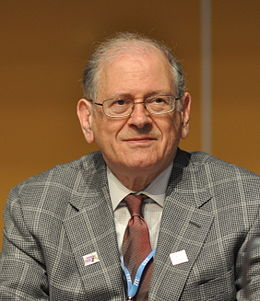

Vinton Gray Cerf est un ingénieur américain étant responsable de la création du protocole TCP/IP. Il était accompagné de l'ingénieur américain, Robert Elliot Kahn. Eux deux ont crée le protocole TCP IP en 1972. Vinton Cerf est aussi responsable pour avoir contribué au développement d'arpanet.
Vinton fonde Internet Society, en 1992. Il sert à faire valoir les points de vue des utilisateurs d'internet, ainsi que le personnel qui le développe. Il était le premier président d'internet society de 1992 à 1995. Robert Kahn quant à lui à travaillé sur l'arpanet. Dont le réseau fut opérationnel en 1975. Il a fondé la CNRI en 1986 qui lui a vallu la médaille Graham Bell.